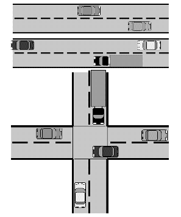
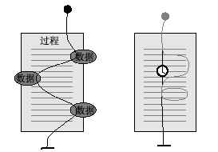
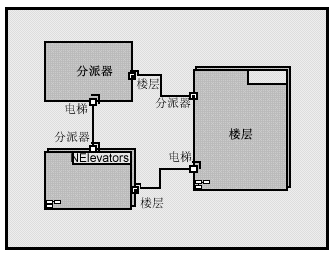
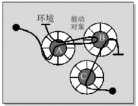
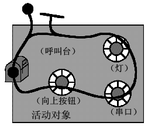
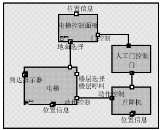

| 概念：并行 |
 |
|
什么是并行？并行是事物在系统中同时发生的趋势。 当然，并行是一种自然的现象。在真实世界中，在任何给定的时刻，均有许多事物同时发生。 当我们设计软件来监视和控制真实世界系统时，我们必须处理这种自然的并行。 处理软件系统中的并行问题时，通常有两个方面是重要的：能够检测和响应以随机顺序发生的外部事件，以及确保这些事件以某个最短的要求时间间隔得到响应。 如果每个并行活动以真正平行的方式独立发展，那么这是相对简单的：我们可以简单地创建分开的程序来处理每个活动。 之所以出现设计并行系统的挑战，主要是因为并行活动之间发生的交互。 当并行活动交互时，需要某种协调。  图 1：工作中的并行示例：不交互的并行活动具有简单的并行问题。 而当并行活动交互时，或者共享相同的资源时，并行问题就变得重要。 车辆交通提供了一个有用的模拟。不同车道上的平行车流几乎没有交互，因此几乎不产生问题。 相邻车道中的平行车流需要一些协调以保证安全交互，但更严重的交互类型发生在十字路口，在这里需要仔细的协调。 为什么我们对并行感兴趣？并行的一些推动力来自外部。也就是，它们是受到环境需要的推动。 在现实世界系统中，许多事物同时发生，且必须由软件“实时地”解决。 为做到这点，许多实时软件系统必须是“反应式”的。它们必须响应外部生成的事件，这些事件可能以有点随机的顺序并／或在有点随机的时间发生。 针对这些情况设计的传统过程程序非常复杂。 而将系统分区成并行的软件元素来处理每个事件则可能简单得多。 这里，关键的词是“可能”，因为复杂性还受到事件之间交互程度的影响。 对于并行，还可能有内部激发的原因 [LEA97]。 如果有多个 CPU 可用，那么并行执行任务能够大大提高系统的计算工作的速度。 即使是在单个处理器中，多任务也可以显著提高速度，例如通过防止某个活动在等待 I/O 时阻塞另一个活动。 系统的启动期间就常常发生这种情形。 常常存在许多组件，每个组件都需要时间来为操作做准备。 依次执行这些操作可能慢得难以忍受。 并行还能提高系统的可控性。例如，一个功能可能在中间流由其他并行功能启动、停止或以其他方式影响 － 如果没有并行组件，这是极其难以完成的。 什么使并发软件的使用变得困难？既然有这么多优点，为什么我们不在任何地方都使用并行编程呢？ 大多数计算机和编程语言在本质上是串行的。过程或处理器每次执行一条指令。 在单个串行处理器中，必须通过使不同任务交错执行来制造并行的假相。 难点不大在于这样做的结构，而在于确定何时以何种方式使这些可能相互交互的程序段进行交错。 尽管通过多处理器可很容易地做到并行，但交互又会变得更复杂。 首先，运行于不同处理器上的任务之间的通信存在问题。 通常有数个涉及到的软件层，这样就增加了复杂性，增添了计时开销。 多 CPU 系统降低了可决定性，因为时钟和计时可能不同，组件可能独立地出现故障。 最后，并行系统可能更难以理解，因为它们缺乏明确的全局系统状态。 并行系统的状态是其组件状态的聚集。 并行、实时系统的示例：电梯系统作为用来说明待讨论概念的示例，我们将使用一套电梯系统。 更准确地说，我们在指一套计算机系统，该系统设计来控制大楼中某个位置的一组电梯。 显然，在一组电梯中可能会同时发生很多事情 － 也可能什么也不发生！ 在任何时间点，任何楼层的某人可能请求一部电梯，而其他请求可能暂挂。 一些电梯可能空闲，而其他电梯则正在载客和／或应答呼叫。 门必须在合适的时间开关。乘客可能正在阻止门关上，或者正在按住门开关按钮，或者正在选择楼层随即又改变主意。 我们需要更新显示屏，需要控制马达，等等，所有这一切都在电梯控制系统的监督下进行。 总体来说，这是一个用来探索并行概念的不错的模型，我们对它的理解程度大致相同，而且共享工作词汇表。
由于可能的乘客在不同的时间对系统发出需求，系统尝试基于他们当前的状态和计划的响应时间，通过选择电梯来应答呼叫，从而提供最佳的总体服务。 例如，当第一名可能的乘客 Andy 呼叫一部电梯下降，有两部电梯空闲，因此最近的电梯 2 将响应，尽管它必须首先上升到 Andy 所在的楼层。 另一方面，稍后，当第二名可能的乘客 Bob 请求一部电梯上升时，较远的电梯 1 响应，因为系统知道电梯 2 必须下降到一个尚未知的目的地，然后才能从下面应答一个向上的呼叫。 作为简化策略的并行如果电梯系统只有一部电梯，且该电梯一次只能服务于一名乘客，那么该情况可能会让我们认为可以用普通的串行程序来处理问题。 即使是对于这种“简单”情况，程序仍需要许多分支来适应不同的状态。 例如，如果乘客总不上电梯并选择楼层，我们将希望对电梯复位，以允许它响应另一个呼叫。 处理来自多名可能乘客的呼叫以及来自多名乘客的请求的普通需求，例证了我们之前讨论的对并行的外部推动力。 因为可能的乘客并行地自己决定何时搭乘电梯，因此他们在看似随机的时间向电梯发出需求，而不管电梯的状态。 要设计满足以下条件的串行程序是极端困难的，该程序能在任何时候响应任何这些外部事件，而同时又继续根据过去的决策指导电梯。 抽象并行为了有效的设计并行系统，我们必须能论证在系统中并行的角色，为了做到这点，我们需要并行本身的抽象。 并行系统的基础构建块是“活动”，这些活动或多或少相互独立地进行。 考虑类似活动的一个有用的图形抽象是 Buhr 的“时间线程”。[BUH96] 图 3 中我们的电梯场景实际上就用到了它们的一种形式。 每个活动由一条线代表，而活动就沿着这条线行进。 大的点代表活动开始的地方，或者活动等待事件发生以能继续进行的地方。 一个活动可以触发另一个活动继续，这在时间线程表示法中通过接触其他时间线程上的等待位置来表示。  图 3：执行线程的可视化 软件基本的构建块是过程和数据结构，但如果只有它们，对于找到并行的原因是不够的。 当处理器执行过程时，它根据当前状态遵循特定的路径。 该路径可以称为“执行线程”或“控制线程”。 此控制线程根据当时存在的状态，可能采取不同的分支和循环，而在实时系统中，可能暂停指定的时段或者等待调度的时间以继续。 从程序设计员的观点出发，执行线程由程序中的逻辑控制，由操作系统调度。 当软件设计员选择让一个过程调用其他过程时，执行线程从一个过程跳转到另一个过程，然后在遇到返回语句时跳回当初离开的位置并继续。 从 CPU 的角度出发，只有一个主要的执行线程在整个软件中迂回前进，一些简短的单独线程对它进行补充，这些简短线程响应硬件中断而执行。 由于其他任何事物都是构建在这个模型上的，因此对于设计人员而言，了解该模型是很重要的。 实时系统的设计人员比起其他类型软件的设计人员而言，更需要详细理解系统如何工作。 不过，此模型的抽象程度如此低，以致于它只能表现非常粗粒度的并行 － 即 CPU 的并行。 要设计复杂系统，具有工作在各个不同的抽象级别的能力是有帮助的。 当然，抽象是创建一个视图或模型，在视图或模型中限制不必要细节的出现，以便我们可以着重考虑对手边的问题重要的内容。 为上移一级，我们通常以层的形式考虑软件。在最基本的级别上，操作系统（OS）在硬件和应用软件之间分层。 它向应用程序提供基于硬件的服务，例如内存、计时和 I/O，但是它抽象化了 CPU，从而创建了一个虚拟机，该虚拟机独立于实际硬件配置。 实现并行：机制管理控制线程为支持并行，系统必须提供多个控制线程。 控制线程的抽象能通过硬件和软件，以多种方式实施。 最常见的机制是以下 [DEI84]、[TAN86] 之一的变体：
多任务当操作系统提供多任务时，常见的并行单元是进程。 进程是由操作系统提供、支持和管理的实体，它的唯一目的在于提供执行程序的环境。 进程提供了一个内存空间供其应用程序排它地使用，提供了一个执行线程以执行该进程，而且还可能提供了某个方法与其他进程之间收发消息。 实际上，进程是用于执行应用程序的并行段的虚拟 CPU。 每个进程有三个可能的状态：
进程还经常分配有相对的优先级。操作系统内核根据进程的状态、优先级和某个调度策略，确定在任何给定的时间运行哪个进程。 多任务操作系统在它们的所有进程之间实际共享单个控制线程。 注意：术语“任务”和“进程”常常被互换使用。 不幸的是，术语“多任务”常常用来表示一次管理多个进程的能力，而“多处理”则指带有多个处理器（CPU）的系统。 我们遵守这个约定，因为它是广泛被接受的。 但是，我们保守地使用术语“任务”，当我们使用时，是为了很好地区分正在执行的工作单元（任务）和为它提供资源和环境的实体（进程）。 如前所述，从 CPU 的角度，只存在一个执行线程。 正如应用程序能通过调用子例程，从一个过程跳转到另一个过程一样，操作系统可以在发生中断、过程完成或某个其他事件的时候，将控制从一个进程转移到另一个进程。 由于进程提供的内存保护，此“任务切换”能以相当大的开销来搬运它。 而且，由于调度策略和进程状态几乎与应用程序观点无关，因此对于考虑应用程序的重要并行种类而言，进程的交错通常抽象级别过低。 为了清晰地论证并行，需要在执行线程的概念和任务切换的概念之间保持清楚的区别，这很重要。 每个进程可被视为维护其自己的执行线程。 当操作系统在进程之间切换时，一个执行线程临时中断，另一个执行线程则在它先前停止的地方启动或继续。 多线程许多操作系统，尤其是用于实时应用程序的操作系统，为进程提供“较轻量级”的替代物，称为“线程”或“轻量级线程”。 线程是在进程中，达到稍好一点的并行粒度的一种方法。 每个线程均属于单个进程，且一个进程中的所有线程共享单个内存空间和由该进程控制的其他资源。 通常每个线程均分配有一个要执行的过程。 注意：很不幸，术语“线程”有多重含义。 当我们单独使用词“线程”时（就像我们现在这样），我们是指由操作系统提供和管理的“物理线程”。 当我们指“执行线程”或“控制线程”或“时间线程”时（如前所述），我们是指不一定与物理线程关联的抽象。 多处理当然，多处理器为真正的并行处理提供了机会。 常见的情况是，每个任务永久地分配给特定处理器中的进程，但是在一些情况下，任务可以动态地分配给下一个可用的处理器。 也许做到这点最可行的方法是使用“对称多处理器”。 在这样一个硬件配置中，多个 CPU 能通过一条公共总线访问内存。 支持对称多处理器的操作系统可以动态地将线程分配给任何可用的 CPU。 支持对称多处理器的操作系统的例子是 SUN 的 Solaris 和 Microsoft 的 Windows NT。 并发软件的基本问题之前我们做出了似乎自相矛盾的断言，即并行既能提高也能降低软件的复杂度。 并行软件之所以能为复杂的问题提供较简单的解决方案，主要是因为它允许并行活动之间的“所关注问题的分离”。 在此方面，并行就是又一个用来增加软件模块化的工具。 当系统必须执行主要独立的活动或响应主要独立的事件时，将它们分配给个别的并行组件自然地简化了设计。 其他与并行软件相关的复杂性几乎完全由以下情形所引起，即这些并行活动几乎独立但又不十分独立。 换言之，复杂性由它们的交互所引起。 从实践的观点出发，异步活动之间的交互总是涉及到某种形式的信号或信息的交换。 并行的控制线程之间的交互引发了一组对于并行系统独特的问题，必须解决这组问题以确保系统的行为正确。 异步或同步交互尽管进程间通信（IPC）机制或线程间通信机制有许多不同的特定实现，它们最终都可以分成两类： 在异步通信中，发送活动不管接收器是否准备好接收，均转发其信息。 在将信息发送到其路径之后，发送器继续它接下来需要做的一切。 如果接收器未准备好接收信息，那么信息会被放到某个队列中，接收器可在以后从该队列中检索信息。 发送器和接收器均相互异步运行，因此无法对对方的状态进行假设。 异步通信通常称为消息传递。 同步通信除了信息交换以外，还包括发送器和接收器之间的同步。 在信息交换期间，两个并行活动相互合并，实际上执行一个共享的代码段，然后当通信完成时再次分开。 这样，在该时间间隔期间，它们相互同步，并且不受相互之间的并行冲突影响。 如果一个活动（发送器或接收器）在另一个活动之前就准备好了进行通信，它将暂挂，直到另一个活动也就绪。 因此，这种通信方式有时称为集合。 同步通信可能存在的问题是，在等待对方就绪之前，活动不能响应其他任何事件。 对于许多实时系统，这有时是不能接受的，因为它可能无法保证及时地响应重要情况。 另一个缺点在于它往往会产生死锁。当两个或更多活动陷入到相互等待的恶性循环时，就发生了死锁。 当并行活动之间需要交互时，设计人员必须在同步风格或异步风格之间进行选择。 对于同步风格，我们的意思是两个或更多并行控制线程必须及时地集合在单个点。 这通常意味着一个控制线程必须等待另一个以响应请求。 最简单且最常见的同步交互形式发生在以下场合，即并行活动 A 需要来自并行活动 B 的信息才能继续进行它自己的工作。 当然，同步交互是非并行软件组件的标准。 普通的过程调用就是同步交互的主要示例：当一个过程调用另一个过程时，调用者即时地将控制转移到被调用的过程，并有效地“等待”控制转移回它。 但是，在并行环境中，需要其他设备来同步互不相关的控制线程。 异步交互不需要及时的集合，但仍需要一些其他设备来支持两个控制线程之间的通信。 通常该设备采用带有消息队列的通信信道的形式，以便能异步地发送和接收消息。 请注意，单个应用程序可以混合同步和异步通信，这取决于在消息接收器处理消息时，它是需要等待响应，还是有其他可以做的事情。 请记住，真正的进程或线程的并行只可能发生在并行执行进程或线程的多处理器上；在单处理器上，操作系统调度程序制造了线程或进程同时执行的假相，它将可用的处理资源分成小块，这样看起来似乎是几个线程或进程在并行执行。 如果设计比较糟糕，会创建频繁通信和同步通信的多个进程或线程，导致时间分片失效，从而使进程或线程耗费大量实际上阻塞的“时间片”，并等待其他进程或线程作出响应。 争用共享资源并行活动可能要依赖于必须在活动之间共享的稀有资源。 典型的例子是 I/O 设备。如果一个活动需要正在由其他活动使用的资源，则它必须等到轮到它。 竞争状态：一致状态的问题并行系统设计最基础的问题可能是避免“竞争状态”。 当系统的一部分必须执行依赖于状态的功能时（也就是，功能的结果取决于系统的当前状态），必须确保该状态在整个操作期间稳定。 换言之，某些操作必须是“原子的”。 只要两个或更多控制线程能访问相同的状态信息，就需要某种形式的“并行控制”来确保当一个线程在执行原子的依赖于状态的操作时，另一个线程不修改状态。 同时访问相同状态信息的尝试可能会使状态在系统内部不一致，这种状态称为“竞争状态”。 在电梯系统中，当乘客选择了某一楼层时，就很容易发生竞争状态的典型示例。 上下运行时，我们的电梯按照在朝每个方向升降时要访问的楼层列表工作。只要电梯到达某一楼层，一个控制线程就将该楼层从相应列表中除去，并从列表中取下一目标。 如果列表为空，则在另一列表包含楼层时电梯会改变方向，如果两份列表均为空，则空闲。 另一个控制线程负责在乘客选择楼层时，将楼层请求放在相应列表中。 每个线程对列表执行某些操作组合，这些操作本质上不是原子的：例如检查下一个可用的槽然后填充该槽。 如果线程恰好与它们的操作交错，则它们能方便地覆盖列表中的相同槽。 死锁两个控制线程彼此阻塞，相互等待对方采取某个操作，这种状态称为死锁。具有讽刺意味的是，死锁发生的原因常常是我们应用某个同步机制来避免竞争状态。 竞争状态的电梯示例很容易造成相对良性的死锁情况。 电梯控制线程认为列表为空，因此绝对不会访问另一层。 楼层请求线程认为电梯正在进行清空列表的工作，因此它不需要通知电梯离开空闲状态。 其他实际问题除了“基础”问题，还有一些实际问题必须在并行软件的设计中明确地解决。 性能权衡在单个 CPU 中，对于通过在任务之间切换来模拟并行所需的机制使用 CPU 周期，这些 CPU 周期可能以其他方式耗费在应用程序本身。 另一方面，例如，如果软件必须等待 I/O 设备，则由并行提供的性能改进可以大大超过任何增加的开销。 复杂性权衡并行软件需要串行编程应用程序中不需要的协调和控制机制。 这些机制使得并行软件更加复杂，而且增加了出现错误的机会。 由于多个控制线程，并行系统中的问题在本质上也更难以诊断。 另一方面，正如我们前面已经指出的一样，当外部推动力本身就是并行时，独立地处理不同事件的并行软件可以比串行软件简单得多，后者必须适应任何顺序的事件。 非确定性因为许多因素确定了并行组件执行的交错，所以相同的软件能以不同的顺序响应相同的事件序列。 根据设计，这样的顺序变化可能生成不同的结果。 并行控制中应用软件的角色并行控制的实施中涉不涉及应用软件均可。 包含一个完整范围的可能性，采用相关程度递增的顺序：
这些可能性既不是包含所有情况的集合，相互之间也不是互斥的。 在给定的系统中，可能使用它们的一个组合。 抽象并行并行系统设计中的一个常见错误是，在设计流程中，过早地选择了要用于并行的特定机制。 每个机制有其确定的优缺点，针对特定情况的“最佳”机制的选择常常通过精妙的平衡与折衷来确定。 机制选择得越早，选择所基于的信息就越少。 明确机制往往还降低了不同情况的设计的灵活性和适应性。 对于大多数复杂的设计任务，可通过使用多个级别的抽象对并行做最好的理解。 首先，系统的功能需求必须在其所需的行为方面进行很好地理解。 其次，应探索可能的并行角色。 最好的做法是使用线程的抽象，而不局限于特定的实施。 在可能的范围内，最终选择的用于实现并行的机制应保持开放，以允许对性能进行微调，从而针对各种产品配置灵活地分配不同的组件。 问题域（例如电梯系统）和解决方案领域（软件构造）之间的“概念距离”仍是系统设计中一个最大的难点。“可见的形式化”对于理解和传达复杂的构想（例如并行行为）是非常有帮助的，实际上它在该概念间隔上架起了一座桥梁。在工具中，已经证明对于这样的问题很有价值的有：
作为并行组件的对象为设计并行软件系统，我们必须将软件的构建块（过程和数据结构）与并行的构建块（控制线程）相结合。 我们已讨论了并行活动的概念，但此概念尚未从活动构造系统。 人们从组件构造系统，且从并行组件构造并行系统很有意义。 就其本身而言，过程、数据结构和控制线程均不能为并行组件生成很自然的模型，但对象似乎很自然地将所有这些必要的元素组成一个简洁的包。 对象将过程和数据结构封装到一个内聚的组件中，该组件具有其自己的状态和行为。 它封装了该状态和行为的特定实施，并定义了一个接口，通过该接口其他对象或软件可以与之交互。 对象通常对现实世界实体或概念进行建模，并通过交换消息与其他对象交互。 如今很多人都很好地接受它们作为构造复杂系统的最佳方式。  图 4：用于电梯系统的一组简单对象。
在这样一个对象模型中，并行可以采取两种形式。 当两个或更多对象在通过分开的控制线程独立地执行活动时，则生成对象间并行。 当多个控制线程在单个对象中活动时，则生成对象内并行。 在如今的大多数面向对象的语言中，对象是“被动的”，没有它们自己的控制线程。 控制线程必须由外部环境提供。 最常见的情况是，环境是标准的操作系统进程，创建的目的是运行用诸如 C++ 或 Smalltalk 之类的语言编写的面向对象的“程序”。如果操作系统支持多线程，则多个线程可在相同或不同对象中活动。 在下图中，被动对象用环状元素表示。 每个项目内部带阴影的区域是其状态信息，分段的外环是定义对象行为的过程（方法）集。
 对象内并行带来了许多并行软件的挑战，例如当多个控制线程能访问相同的内存空间时可能存在竞争状态 － 在这种情况下，数据封装在对象中。 您可能认为数据封装可以解决此问题。 当然，问题在于对象不封装控制线程。 尽管对象间并行的大部分避免了这些问题，但仍存在一个困扰的问题。 为使两个并行对象通过交换消息而交互，至少两个控制线程必须处理消息，并访问相同的内存空间以将其转手。 相关（但更难）问题是对象在不同的进程或甚至处理器之间的分发。 不同进程中的对象之间的消息需要对进程间通信的支持，且通常需要消息编码和译码成能跨过进程边界传播的数据。 当然，任何这些问题都是可以解决的。事实上，正如我们在前一节中所指出的那样，每个并行系统必须处理它们，因此存在经过证明的解决方案。 “并行控制”造成了额外的工作并引进了额外的错误机会。 而且，它还模糊了应用问题的实质。 出于所有这些原因，我们希望尽可能地不需要应用程序员来明确地处理它。完成这点的一个方法是构建面向对象的环境，带有对并行对象之间消息传递的支持（包括并行控制），并将单个对象内多个控制线程的使用减到最少甚至完全消除。 实际上，这包括控制线程以及数据。 活动对象模型带有其自身的控制线程的对象称为“活动对象”。 为了支持与其他活动对象之间的异步通信，每个活动对象均提供有一个消息队列或“邮箱”。 创建对象时，环境赋予它自己的控制线程，对象会封装该控制线程，直到对象消亡。 与被动对象类似，活动对象在外部消息到达之前是空闲的。 对象执行任何适合于处理消息的代码。 任何在对象忙时到达的消息将在邮箱中排队。 当对象完成消息的处理，它会返回以拣取邮箱中的下一条正在等待的消息，或者等待消息到达。 在电梯系统中，活动对象的好的候选者包括电梯本身、每层的呼叫台以及分派器。 根据实施情况，可以使活动对象非常有效率。 不过，相比被动对象，活动对象运载的内容开销稍大。 这样，由于不是每个操作都需要是并行的，因此将活动对象和被动对象混合在同一个系统中的现象很常见。 由于其不同的通信风格，因此难以使它们成为对等的点，但通过替换我们先前使用的操作系统进程，活动对象为被动对象生成了理想的环境。 实际上，如果活动对象将所有工作委托给被动对象，它基本上就成了带有进程间通信工具的操作系统进程或线程的等价物。 不过，更令人感兴趣的活动对象可让它们自己执行一部分工作，而将另一部分工作委托给被动对象。  图 6：“主动”对象为被动类提供环境 主动电梯对象内的被动对象的不错的候选者包括两份楼层列表，其中一份是电梯上升时必须停的楼层，另一份是电梯下降时必须停的楼层。 电梯应能询问列表要停的下一层、向列表新加停靠的楼层以及删除已经停靠的楼层。 因为复杂系统几乎总是由子系统构成，从根部到叶子级别的组件其深度有若干个级别，因此很自然要对活动对象模型进行扩展，以允许活动对象包含其他活动对象。 尽管单线程的活动对象不支持真正的对象内并行，但对于许多应用程序，将工作委托给所包含的活动对象是一个合理的替换方案。 它保留了在每个对象的基础上状态、行为和控制线程的完整封装的重要优点，即简化并行控制问题。  图 7：电梯系统，显示嵌套的活动对象 例如，考虑上面描述的部分电梯系统。 每部电梯有门、提升间和控制面板。每个这些组件都由一个并行的活动对象进行了良好的建模，其中门对象控制电梯门的打开和关闭，提升间对象通过机械提升间控制电梯的定位，而控制面板对象监视楼层选择按钮和门开／关按钮。 较之用单个控制线程管理所有行为，将并行控制线程包括为活动对象可使得生成的软件要简单得多。 对象中的“一致状态”问题正如我们讨论竞争状态时所说，为了让系统以正确的和可预测的方式运转，某些依赖于状态的操作必须是原子的。 为使对象正确运转，其状态在处理任何消息前后无疑需要内在地一致。 在消息的处理期间，对象的状态可能处于瞬态状态且是不确定的，因为操作可能只是部分完成。 如果对象总是完成对一条消息的响应之后才响应另一条消息，那么瞬态状态不是问题。 中断一个对象来执行另一个对象也不是问题，因为每个对象均实施其状态的严格封装。 （严格地说，这并不全对，我们将马上解释。） 任何环境，只要在该环境下一个对象中断了某条消息的处理而处理另一条消息，则引起了竞争状态的可能性，因此需要使用并行控制。 这随之又引起了死锁的可能性。 所以，如果对象只有处理完每条消息才能接受另一条消息，那么并行设计通常就较简单。 此行为在我们已提供的活动对象模型的特定形式中是隐含的。 一致状态问题可在并行系统中以两种不同的形式表现自身，这些从面向对象的并行系统方面可能更容易理解。 第一种形式是我们已讨论的形式。 如果单个对象（被动或主动）的状态对于多个控制线程可访问，那么必须保护原子操作，可以通过基本 CPU 操作的天然原子性保护，或通过并行控制机制保护。 第二种形式的一致状态问题可能更精细。 如果多个对象（主动或被动）包含相同的状态信息，对象必将至少在短时间内无法达到一致的状态。 在差的设计中它们可能较长时间（甚至是永远）不同意。 此不一致状态的表现可被视为其他形式的数学“对偶”。 例如，电梯运动控制系统（提升间）必须确保门关闭且不能打开，然后电梯才能运动。 不带正确防护的设计可能会允许门正好在电梯开始运动的时候响应乘客按开门按钮的操作而打开。 似乎对此问题的一个简单的解决方案是只允许状态信息驻留在一个对象上。 尽管这可能有所帮助，但它会对性能产生不利影响，尤其是在分发式系统中。 而且，这并不是可防止错误操作的解决方案。即使只有一个对象包含特定状态信息，只要其他并行对象在特定时间点根据该状态作出决策，状态更改就会使其他对象的决策无效。 对于一致状态问题，没有非常神奇的解决方案。 所有实际的解决方案均需要我们标识原子操作，并用某种同步机制保护这些操作，这些机制在可容忍的短时间内会阻止并行访问。 “可容忍的短时间”对环境的依赖性非常高。 它可能是 CPU 将所有字节存储在一个浮点数中所耗费的时间，或者可能是电梯运行到下一停止点所耗费的时间。 实时系统在实时系统中，RUP 建议使用 封装体来代表活动对象。 封装体具有很强的语义，可简化并行的建模： 封装体来代表活动对象。 封装体具有很强的语义，可简化并行的建模：
|
© Copyright IBM Corp. 1987, 2006. All Rights Reserved. |